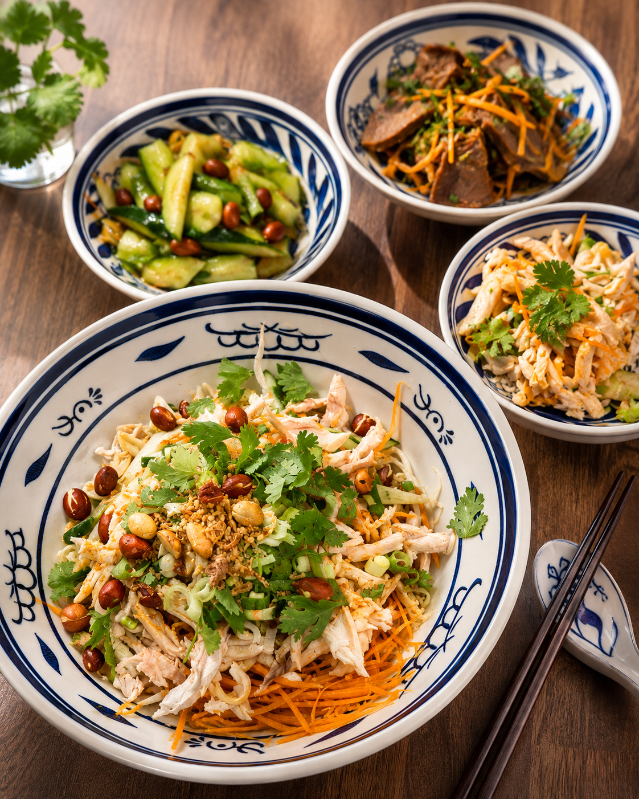
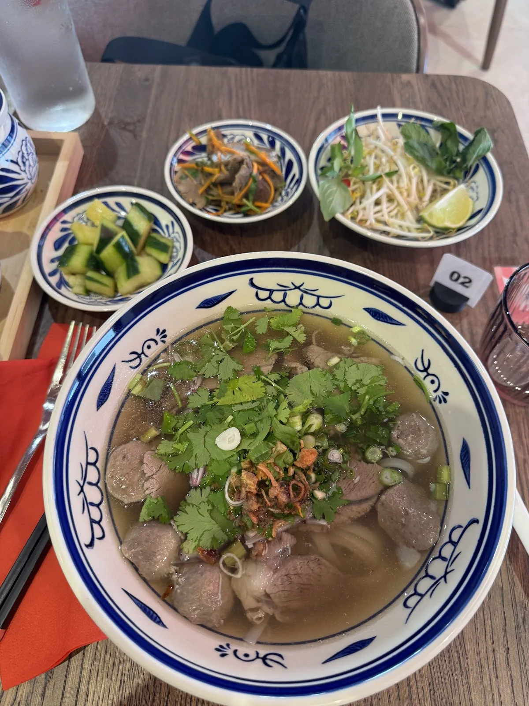

Soupe de nouilles au bœuf braisé
AMA NOODLE célèbre une cuisine familiale chinoise généreuse : nouilles fraîches, bouillons mijotés lentement, assaisonnements précis et bols qui réchauffent autant que le corps que l’esprit.
Les plats principaux sont désormais présentés en version détourée, sans fond, pour créer un rendu plus premium et plus dynamique dans tout le site.


“AMA 阿妈” signifie « Maman » et évoque aussi la figure tendre de la grand-mère. Chez AMA NOODLE, chaque bol s’inspire de cette cuisine du cœur : simple, généreuse et préparée avec soin.
Nouilles fraîches à base de blé préparées maison, bouillons travaillés longuement et recettes pensées autour de saveurs franches, réconfortantes et équilibrées.
Les avis parlent régulièrement d’un service accueillant, rapide, d’assiettes copieuses et de plats savoureux bien assaisonnés. Une vraie bonne adresse pour une pause gourmande à Part-Dieu.

Bouillon végétarien aux champignons disponible pour les personnes végétariennes. En cas d’allergie ou d’intolérance alimentaire, il est recommandé de le signaler à l’équipe.

Sauce gourmande et parfumée, servie avec des nouilles fraîches maison. Au choix : lamelles de poulet marinées, crevettes sautées ou bœuf en lamelle braisé aux épices.

Bouillon maison signature profond et aromatique, lentement infusé entre 8 et 12 heures. Garnitures au choix : bœuf tendre braisé à la sauce rouge, bœuf aux épices, crevettes sautées, canard laqué (+1 €) ou œuf au plat (+1 €).

Une version parfumée et réconfortante avec au choix bœuf (boulettes, bœuf cru et cuit) ou crevettes sautées, toujours avec le niveau de piment adapté selon vos préférences.


Service accueillant, ambiance conviviale, bols copieux et saveurs au rendez-vous : les avis confirment l’expérience.
« Un excellent moment ! Le service est accueillant et rapide. L’ambiance est conviviale. Côté cuisine, délicieux : des plats savoureux et bien assaisonnés. On sent la qualité des produits. Je recommande sans hésiter ! »
Matteo Baruzzi24 juin 2026« Une carte assez restreinte mais un service impeccable et des plats parfaitement réalisés. »
Amandine Labroy13 juillet 2026« Excellente découverte ! Les noodles sont excellentes, préparées avec des ingrédients de qualité et beaucoup de soin. Les saveurs sont au rendez-vous et les portions sont généreuses. »
Ixus19 juin 2026« Soupe Phô Bœuf commandée ce soir. Service plutôt rapide, très copieux, rapport qualité quantité prix plus que correct. »
Thibault S.13 juillet 2026« Les nouilles à la cacahuète sont les meilleurs que j’ai mangé. La soupe Pho est très bonne aussi. Le service est rapide, les serveurs agréables, le prix bas et on est bien installé. »
Jean-baptiste follet (XS-JB)26 juillet 2026« Un excellent moment ! Le service est accueillant et rapide. L’ambiance est conviviale. Côté cuisine, délicieux. »
Matteo Baruzzi24 juin 2026« Une carte assez restreinte mais un service impeccable et des plats parfaitement réalisés. »
Amandine Labroy13 juillet 2026« Excellente découverte ! Les saveurs sont au rendez-vous et les portions sont généreuses. »
Ixus19 juin 2026« Service plutôt rapide, très copieux, rapport qualité quantité prix plus que correct. »
Thibault S.13 juillet 2026« Les nouilles à la cacahuète sont les meilleurs que j’ai mangé. »
Jean-baptiste follet (XS-JB)26 juillet 2026Oui. L’identité d’AMA NOODLE repose sur des nouilles fraîches faites maison, préparées avec soin, ainsi que sur des bouillons travaillés lentement pour offrir plus de profondeur et de goût.
Oui, le menu mentionne un niveau de piment sur-mesure pour les bols de nouilles et les soupes. Cela permet d’adapter les plats selon vos préférences.
Le menu indique qu’un bouillon végétarien aux champignons est disponible pour les personnes végétariennes. Pour toute demande spécifique, il est conseillé de le préciser à l’équipe sur place.
Le restaurant est situé au 13 boulevard Eugène Deruelle, 69003 Lyon, dans le secteur de la Part-Dieu. La page Infos pratiques regroupe également la carte et le lien direct vers l’itinéraire.
Oui. Une page menu dédiée est disponible sur ce site, avec les plats mis en avant, les formules, les boissons ainsi qu’un accès direct au menu PDF fourni par le restaurant.